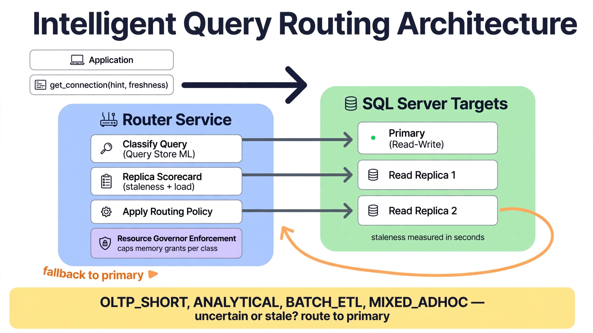

Chapter 24: Intelligent Query Routing and Workload Management
The primary is at 92% CPU. The readable secondary sits at 11%. A reporting query that could run perfectly well on the secondary is hammering the primary — because the connection string says so, and connection strings do not think. Static routing (read-only routing lists, hardcoded connection strings per workload) was designed for a world where workloads were few and stable. In practice, workloads shift by the hour: the ETL window, the month-end close, the ad-hoc analyst surge after a product launch. The routing decision — where should this query execute right now? — depends on live replica lag, current load on each node, the query's own resource profile, and its tolerance for slightly stale data. That is a classification and optimization problem, and it is where AI earns its place in workload management. This chapter builds an intelligent routing layer: ML workload classification from Query Store telemetry, lag-aware replica selection, and Resource Governor integration that enforces the routing decisions the model makes.
---
Classifying Workloads from Query Store Telemetry
Intelligent routing starts with knowing what each query is. A query's routing suitability is determined by its resource profile and its data-freshness requirements — both inferable from Query Store history. The classification task: given a query's historical execution signature, assign it to a routing class.
Four classes cover nearly every production workload:
OLTP_SHORT — sub-second, high-frequency, latency-sensitive. Must stay on the primary; routing these to a secondary buys nothing and risks stale reads on data the application just wrote.
ANALYTICAL — long-running, scan-heavy, latency-tolerant. The ideal secondary workload: it benefits most from isolation and tolerates seconds of replication lag.
BATCH_ETL — very long-running, write-heavy or bulk operations. Primary-only (writes cannot go to secondaries), but schedulable: the model identifies them so the router can defer or throttle rather than route.
MIXED_ADHOC — everything else: the analyst queries with unpredictable profiles. Routed dynamically based on current conditions.
Query Store already records the features that separate these classes. Extract per-query signatures and train a classifier:
-- Per-query execution signatures: features for the workload classifier
SELECT
qsq.query_id,
LEFT(qsqt.query_sql_text, 200) AS query_excerpt,
SUM(qsrs.count_executions) AS total_executions,
AVG(qsrs.avg_duration / 1000.0) AS avg_duration_ms,
AVG(qsrs.avg_cpu_time / 1000.0) AS avg_cpu_ms,
AVG(CAST(qsrs.avg_logical_io_reads AS FLOAT)) AS avg_logical_reads,
AVG(CAST(qsrs.avg_logical_io_writes AS FLOAT)) AS avg_logical_writes,
AVG(CAST(qsrs.avg_rowcount AS FLOAT)) AS avg_rowcount,
-- Write ratio: separates read-mostly analytics from write-heavy batch
AVG(CAST(qsrs.avg_logical_io_writes AS FLOAT))
/ NULLIF(AVG(CAST(qsrs.avg_logical_io_reads AS FLOAT)), 0) AS write_read_ratio,
-- Execution regularity: scheduled batch vs. bursty ad-hoc
STDEV(qsrs.count_executions) / NULLIF(AVG(CAST(qsrs.count_executions AS FLOAT)), 0)
AS execution_cv,
MAX(qsrsi.end_time) AS last_seen
FROM sys.query_store_query qsq
JOIN sys.query_store_query_text qsqt ON qsqt.query_text_id = qsq.query_text_id
JOIN sys.query_store_plan qsp ON qsp.query_id = qsq.query_id
JOIN sys.query_store_runtime_stats qsrs ON qsrs.plan_id = qsp.plan_id
JOIN sys.query_store_runtime_stats_interval qsrsi
ON qsrsi.runtime_stats_interval_id = qsrs.runtime_stats_interval_id
WHERE qsrsi.start_time > DATEADD(DAY, -14, GETUTCDATE())
GROUP BY qsq.query_id, qsqt.query_sql_text
HAVING SUM(qsrs.count_executions) > 20;import pandas as pd
import numpy as np
import pyodbc
from sklearn.ensemble import RandomForestClassifier
# Heuristic labeling function: bootstrap labels from domain rules,
# then let the model generalize to the ambiguous middle.
def heuristic_label(row) -> str:
if row['avg_duration_ms'] < 500 and row['total_executions'] > 10000 \
and row['write_read_ratio'] < 0.05:
return 'OLTP_SHORT'
if row['avg_duration_ms'] > 30000 and row['write_read_ratio'] < 0.01 \
and row['avg_logical_reads'] > 100000:
return 'ANALYTICAL'
if row['write_read_ratio'] > 0.2 and row['avg_duration_ms'] > 60000:
return 'BATCH_ETL'
return 'MIXED_ADHOC'
def train_workload_classifier(conn_str: str):
conn = pyodbc.connect(conn_str)
df = pd.read_sql("-- query above --", conn)
conn.close()
df['label'] = df.apply(heuristic_label, axis=1)
# Log-scale the heavy-tailed features before training
for col in ['avg_duration_ms', 'avg_cpu_ms', 'avg_logical_reads',
'avg_logical_writes', 'avg_rowcount', 'total_executions']:
df['log_' + col] = np.log1p(df[col].fillna(0))
feature_cols = (['log_' + c for c in
['avg_duration_ms', 'avg_cpu_ms', 'avg_logical_reads',
'avg_logical_writes', 'avg_rowcount', 'total_executions']]
+ ['write_read_ratio', 'execution_cv'])
X = df[feature_cols].fillna(0)
model = RandomForestClassifier(
n_estimators=300, max_depth=10, class_weight='balanced',
random_state=42, n_jobs=-1)
model.fit(X, df['label'])
return model, feature_colsThe heuristic labeling bootstrap is deliberate. Hand-labeling ten thousand queries is infeasible; pure unsupervised clustering produces classes that do not map to routing decisions. Domain-rule labels for the clear cases, plus a model that generalizes to the ambiguous middle, gives you a classifier whose classes mean something operationally. Retrain weekly — workload profiles drift as applications evolve, and a classifier trained on last quarter's signatures misroutes this quarter's new report.
---
Lag-Aware Replica Selection
Classifying a query as ANALYTICAL answers whether it can move. The next decision is where — and the answer changes minute to minute with replica lag and load. A secondary with a 4-minute redo queue is a fine target for yesterday's trend report and a terrible target for the "orders in the last 5 minutes" dashboard. The router needs two live inputs per replica: how stale it is, and how loaded it is.
-- Replica scorecard: staleness + load, refreshed by the router every 30 seconds
SELECT
ar.replica_server_name,
ars.role_desc,
drs.synchronization_health_desc,
-- Staleness: seconds of data the replica is behind
CASE WHEN drs.redo_rate > 0
THEN CAST(drs.redo_queue_size AS FLOAT) / drs.redo_rate
ELSE 9999 END AS staleness_seconds,
DATEDIFF(SECOND, drs.last_commit_time, SYSUTCDATETIME())
AS seconds_since_last_commit,
-- Load: active requests and recent CPU (from the replica's own DMVs
-- via linked server, or pushed by a per-replica collector agent)
r.load_active_requests,
r.load_cpu_percent
FROM sys.dm_hadr_availability_replica_states ars
JOIN sys.availability_replicas ar ON ar.replica_id = ars.replica_id
JOIN sys.dm_hadr_database_replica_states drs ON drs.replica_id = ars.replica_id
LEFT JOIN dba.replica_load_cache r
ON r.replica_server_name = ar.replica_server_name
WHERE ars.role_desc = 'SECONDARY'
AND drs.is_local = 0;The routing policy combines classification with the scorecard:
OLTP_SHORT → primary, always. No model discretion; the staleness risk dominates.
ANALYTICAL → the secondary minimizing a cost function: cost = α · staleness_seconds + β · load_cpu_percent, restricted to replicas whose staleness is under the query's declared freshness tolerance. The freshness tolerance comes from the application: register it per report or per connection string label ("tolerance: 300s"), defaulting to a conservative 60 seconds.
BATCH_ETL → primary, but the router signals the scheduler: this workload is deferrable. If primary CPU is above the contention threshold, the router returns "defer 15 minutes" instead of a connection — pushing back on the caller rather than piling onto an overloaded primary.
MIXED_ADHOC → dynamic: route to a secondary when one satisfies the freshness tolerance and the primary is under pressure; otherwise primary. This is the class where the model's judgment matters most, because the right answer genuinely depends on current conditions.
Tune α and β empirically: start with staleness weighted heavily (data correctness first), then shift weight toward load balancing as you gain confidence in the freshness-tolerance declarations. Every routing decision gets logged with its inputs — classification, scorecard snapshot, chosen target — so a wrong route is diagnosable rather than mysterious.
---
Enforcing Routing with Resource Governor
Routing decisions made in the application tier are advisory; a misconfigured connection string bypasses them silently. Resource Governor makes them enforceable inside the engine. The pattern: a classifier function that maps each session to a workload group based on the application's declared workload label (passed via APP_NAME() or a session context value set at connect time), with each group carrying CPU, memory, and DOP caps appropriate to its class.
-- Workload groups: caps per routing class (create once)
CREATE WORKLOAD GROUP rg_oltp
WITH (REQUEST_MAX_CPU_TIME_SEC = 30, REQUEST_MAX_MEMORY_GRANT_PERCENT = 10,
MAX_DOP = 4) USING [default];
CREATE WORKLOAD GROUP rg_analytical
WITH (REQUEST_MAX_CPU_TIME_SEC = 3600, REQUEST_MAX_MEMORY_GRANT_PERCENT = 40,
MAX_DOP = 8) USING [default];
CREATE WORKLOAD GROUP rg_batch
WITH (REQUEST_MAX_CPU_TIME_SEC = 14400, REQUEST_MAX_MEMORY_GRANT_PERCENT = 25,
MAX_DOP = 8) USING [default];
GO
-- Classifier: application declares its workload class at connect time
-- via SESSION_CONTEXT (set by the router or the app's connection logic)
CREATE FUNCTION dbo.rg_classifier()
RETURNS SYSNAME WITH SCHEMABINDING AS
BEGIN
DECLARE @class SYSNAME =
CAST(SESSION_CONTEXT(N'workload_class') AS SYSNAME);
RETURN CASE @class
WHEN N'OLTP_SHORT' THEN N'rg_oltp'
WHEN N'ANALYTICAL' THEN N'rg_analytical'
WHEN N'BATCH_ETL' THEN N'rg_batch'
ELSE N'default'
END;
END;
GO
ALTER RESOURCE GOVERNOR WITH (CLASSIFIER_FUNCTION = dbo.rg_classifier);
ALTER RESOURCE GOVERNOR RECONFIGURE;
GOThe classifier closes the loop with the ML model: the router classifies the workload, sets SESSION_CONTEXT(N'workload_class') on the connection it hands out, and Resource Governor enforces the resource envelope even if the query's actual behavior differs from its classification. An ANALYTICAL query that turns out to be pathologically expensive hits the group's memory grant cap instead of starving the OLTP workload sharing the instance. Monitor sys.dm_resource_governor_workload_groups for throttling events — a spike in throttled analytical queries is the signal to revisit either the classification or the caps.
---
The Router Service: Architecture and Fallback

How to read it: the application never talks to SQL Server directly — it calls get_connection(hint, freshness), and the blue Router Service zone does the thinking. First it classifies the query (Query Store telemetry through a machine-learning model into OLTP_SHORT, ANALYTICAL, BATCH_ETL, or MIXED_ADHOC), then reads the Replica Scorecard — each read replica ranked by staleness in seconds plus current load — then Apply Routing Policy picks the cheapest replica that satisfies the query's freshness tolerance. The purple Resource Governor Enforcement strip sets the session context on the connection it hands out, so even a misclassified query hits its memory-grant cap instead of starving OLTP. Reads land on replicas; writes and OLTP go to the green Primary. The orange fallback loop is the safety design: classifier uncertain, scorecard stale, or no replica fresh enough — route to the primary. The router earns trust by degrading to current behavior whenever its inputs are doubtful, which is why shadow mode is the only sane way to roll it out.
In production, the routing logic lives in a small service (or a connection-proxy sidecar) between applications and SQL Server — not in application code, where it would be reimplemented inconsistently five times. The service exposes one operation: get_connection(workload_hint, freshness_tolerance_seconds). Internally it runs the pipeline from this chapter: classify the query (or accept the application's hint and verify it against the model's classification), read the replica scorecard, apply the routing policy, set the session context, and return a connection to the chosen node.
The fallback behavior is what makes this safe to deploy. If the classifier is uncertain (low prediction confidence), if the scorecard is stale (collector lag > 60 seconds), or if no secondary satisfies the freshness tolerance — route to the primary. The primary is always the safe default; intelligent routing is an optimization that earns trust by degrading to current behavior whenever its inputs are doubtful. Log every fallback with its reason. A rising fallback rate is the earliest signal that the classifier needs retraining or the telemetry pipeline needs attention.
Roll out in shadow mode first: run the router alongside existing connection logic, log what it would have decided, and compare against actual performance. When the shadow decisions consistently beat the static routing — lower primary CPU during peak, no freshness violations — cut over one application at a time, starting with the reporting workload that has the most headroom in its freshness tolerance.
---
Key Takeaways
QueryOptimizer — Self-Hosted SQL Performance Workbench
EXPLAIN visualizer · Index advisor · Slow query dashboard · SQL Server
Test yourself on this chapter
5 questions · instant scoring · explanations included